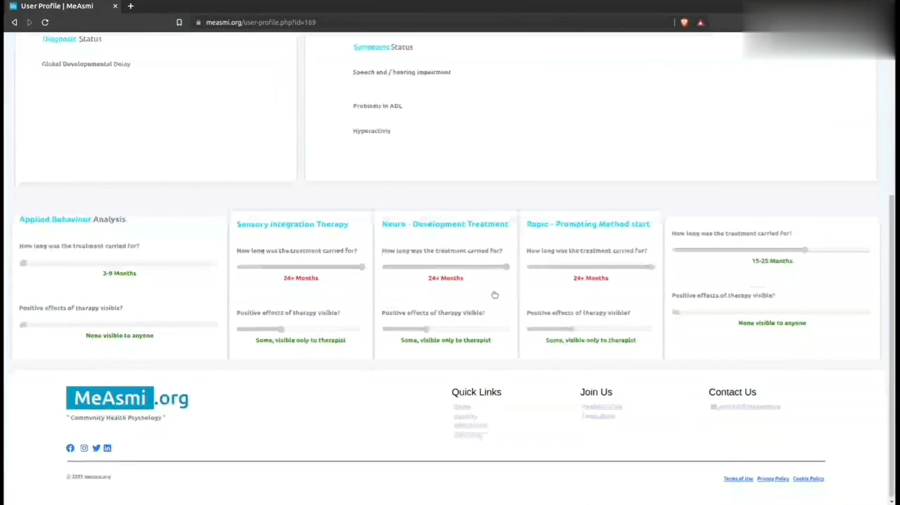
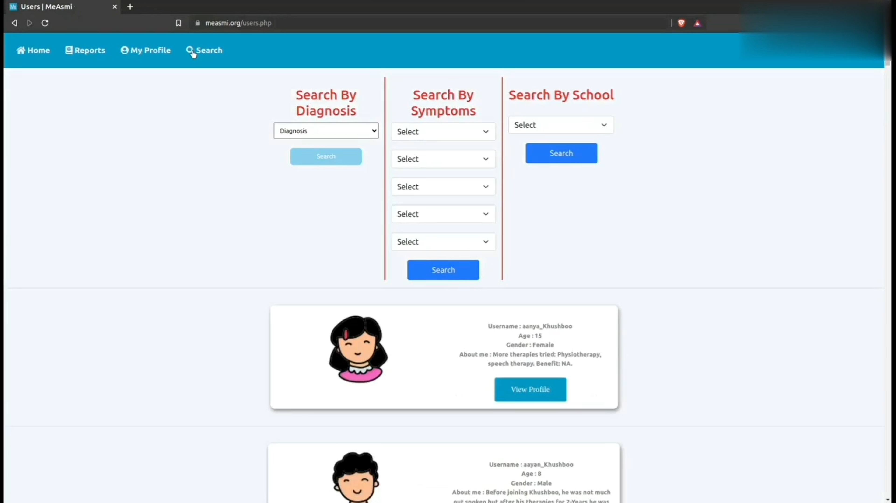

In an age where technology and psychology converge, the MeAsmi project emerges as a beacon of innovation. Led by a team of visionary developers and spearheaded by an esteemed Lead Developer, this initiative has revolutionized the approach to community psychology, particularly for neurodivergent individuals. Combining cutting-edge machine learning techniques with deep psychological insights, MeAsmi redefines treatment methodologies for mental disorders, setting a new benchmark in the field.
MeAsmi's journey begins with its meticulous data collection process. The team, comprising a blend of technical experts and psychological professionals, embarked on a comprehensive data gathering mission. They collated extensive information on diagnostic patterns, symptomatology, and therapeutic effectiveness, creating a rich dataset that serves as the foundation for groundbreaking analysis.
The project's standout feature is its integration of advanced machine learning algorithms. These algorithms are adept at identifying intricate patterns and correlations within the data, offering insights far beyond traditional analytical capabilities. The project’s use of both unsupervised and supervised learning methodologies has significantly enriched the understanding of mental health care, enabling the development of more effective and personalized treatment plans.
At the helm of this revolutionary project is the Lead Developer, whose role has been crucial in steering the team towards success. The project is marked by a unique collaborative spirit, bringing together three academically renowned professors and five experienced therapists. This interdisciplinary synergy has been key in merging domain expertise with technological innovation, ensuring the data is interpreted accurately and applied practically.
Leveraging the insights from machine learning, MeAsmi has been instrumental in developing novel therapeutic strategies. These strategies have significantly contributed to the field, aiding in the formulation of customized therapy recommendations and identifying new, effective therapy methods. The innovations derived from the project have shown potential in altering the landscape of mental health treatment.
A significant aspect of MeAsmi is its interactive community platform. This platform functions as a dynamic hub for families and professionals, providing access to valuable information on therapeutic effectiveness and insights from machine learning analyses. It plays a crucial role in promoting a data-driven understanding of mental health disorders, fostering community engagement and knowledge sharing.
MeAsmi is not just a project but a movement committed to ongoing research and collaboration. The team ensures that the machine learning models are regularly updated and refined, maintaining their relevance and accuracy. Collaborations with organizations like KidsRights underscore MeAsmi's dedication to making a societal impact, particularly in the field of child psychology.
MeAsmi's Collaboration with KidsRightsThe MeAsmi project is more than a technological triumph; it is a paradigm shift in psychological care. It exemplifies the immense potential of integrating machine learning with psychological expertise. As it continues to evolve and impact the community psychology landscape, MeAsmi stands as a prime example of how technology can be harnessed to bring about positive change in society, especially in understanding and treating mental disorders among neurodivergent individuals. This initiative not only highlights the transformative potential of machine learning in psychological applications but also sets a precedent for future technological integrations in the healthcare sector.